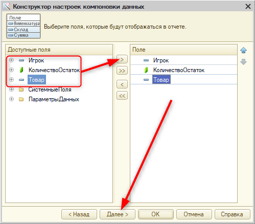
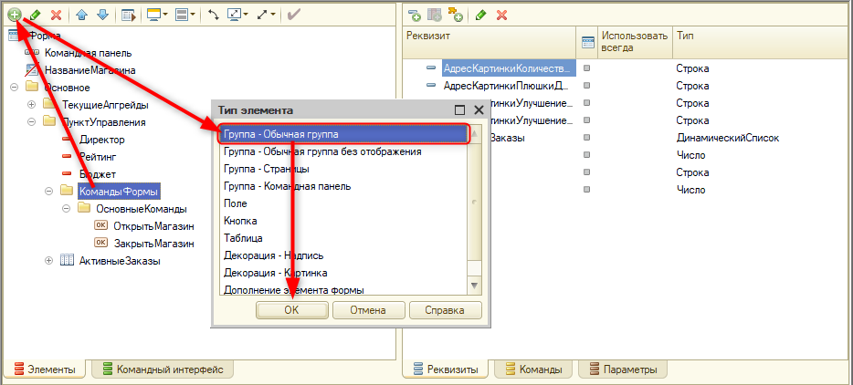
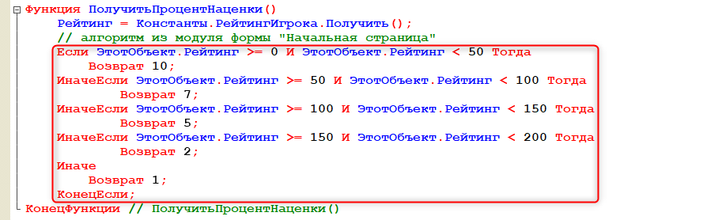

|
Изменить размер отчета можно, зажав клавишу Ctrl на клавиатуре и покрутив колесико мыши. |
Тема этого занятия – создание отчетов. Отчеты позволяют анализировать данные в более удобном виде.
Отчеты позволяют анализировать и выводить данные в более удобном виде для пользователя. |
В системе реализуем три отчета, а также выполним несколько смежных задач:
Добавим первый отчет. Имя отчета – "ОстаткиДенег". Чтобы сформировать отчет, необходимо воспользоваться "Схемой компоновки данных". Нажмем на кнопку "Открыть схему компоновки данных" (рис. 15.1).
Рис. 15.1. Создание отчета
В появившемся окне нажимаем "Готово" и попадаем в основную схему компоновки данных.
Для создания отчета необходимо воспользоваться минимум двумя вкладками: "Наборы данных" и "Настройки".
Во вкладке "Наборы данных" формируется запрос к системе для получения необходимых данных. Добавим новый набор данных, нажав на кнопку "Добавить", и выберем пункт "Добавить набор данных – запрос" (рис. 15.2).
Рис. 15.2. Добавление набора данных
Для составления запроса нажмем на кнопку "Конструктор запроса" (рис. 15.3).
Рис. 15.3. Открытие конструктора запроса
Конструктор запроса позволяет проанализировать данные системы, выбрать таблицу и определить поля этой таблицы для получения данных для отчета. |
Для отчета "ОстаткиДенег" данные будут запрашиваться из регистра накопления "ОстаткиДенег", а именно из виртуальной таблицы "ОстаткиДенег.Остатки". Выберем ее двойным нажатием левой кнопки мыши. Из таблицы выбираем поля "Игрок" и "КоличествоОстаток", после чего нажимаем "Ок" (рис. 15.4).
Рис. 15.4. Составление запроса при помощи конструктора запросов
В результате в нижней части экрана появляется текст запроса, а в верхней – таблица со списком полей, которые будут доступны к выводу.
Для удобства игрока зададим заголовок полю "КоличествоОстаток". Для этого нажмем на галочку под именем поля и введем новый заголовок – "Осталось денег". После чего перейдем на вкладку "Настройки" (рис. 15.5).
Рис. 15.5. Создание заголовка
На вкладке "Настройки" нажмем на кнопку "Открыть конструктор настроек" (волшебную палочку) и настроим компоновку данных. В качестве типа отчета укажем "Список" (рис. 15.6).
Рис. 15.6. Настройка компоновки данных
Далее выберем поля для отчета: "Игрок" и "КоличествоОстаток" (рис. 15.7). Следующим шагом можно определить тип группировки данных, но, поскольку работа идет с виртуальной таблицей, группировка не требуется. Нажимаем "Далее". Затем следует настройка порядка данных в отчете. Выберем поле "Игрок" и нажмем "Ок" (рис. 15.8).
Рис. 15.7. Настройка компоновки данных |
Рис. 15.8. Настройка сортировки отчета |
В нижней части экрана перейдем на вкладку "Другие настройки" и изменим "Макет оформления", нажав два раза левой кнопкой мыши по значению "Основной". В появившемся окне выбираем "Зеленый" (рис. 15.9).
Рис. 15.9. Изменение макета оформления отчета
Обновим конфигурацию базы данных и запустим пользовательский режим.
Нажмем на раздел "Отчеты" и в списке выберем единственный на текущий момент отчет – "Остатки денег". Далее нажмем на кнопку "Сформировать" (рис. 15.10).
Рис. 15.10. Отчет "Остатки денег"
|
Изменить размер отчета можно, зажав клавишу Ctrl на клавиатуре и покрутив колесико мыши. |
В результате отобразилась информация о финансовом состоянии администратора. В дальнейшем, когда в системе появятся новые игроки, информация об их бюджете также будет отображаться в отчете.
Закроем пользовательский режим и вернемся в конфигуратор.
Вторая задача, которую необходимо решить, – это реализация отображения информации не только об остатке денег, но также и о том, сколько денег игрок потратил и заработал в целом.
Переименуем отчет "ОстаткиДенег" в "ОтчетПоФинансам" и откроем схему компоновки данных (рис. 15.11).
Рис. 15.11. Изменение имени отчета
В тексте запроса необходимо кардинально изменить набор полей, который будет использоваться для формирования отчета, поэтому проще очистить данное поле (рис. 15.12).
Рис. 15.12. Удаление текста запроса
Нажмем на кнопку "Конструктор запроса", чтобы заново определить набор полей (рис. 15.13).
Рис. 15.13. Переход к конструктору запроса
Получать данные необходимо из регистра накопления "ОстаткиДенег". Но сейчас в качестве таблицы выберем виртуальную таблицу "Обороты". Из нее можно получить поля "Игрок", "КоличествоОборот", "КоличествоПриход" и "КоличествоРасход" (рис. 15.14).
Рис. 15.14. Выбор полей для запроса
В данном случае в поле "КоличествоПриход" будет отображаться информация о том, сколько в целом денег игрок получил. В поле "КоличествоРасход" – сколько денег игрок в целом потратил, а "КоличествоОборот" – разница между этими двумя полями.
Чтобы пользователь точно понимал, какая информация выводится в этих полях, изменим их заголовки.
У поля "КоличествоОборот" укажем заголовок "Бюджет", у поля "КоличествоПриход" – "Заработано", у "КоличествоРасход" – "Потрачено" (рис. 15.15).
Рис. 15.15. Изменение заголовков полей
Далее на вкладке "Настройки" нужно изменить отчет. Для этого нажмем на волшебную палочку (рис. 15.16).
Рис. 15.16. Переход к конструктору настроек отчета
В открывшемся окне нажмем на кнопку "Да", так как никаких настроек вручную ранее не было выполнено (рис. 15.17).
Рис. 15.17. Предупреждение от системы
На первой вкладке нажмем на кнопку "Далее" и перейдем к выбору полей для отображения в отчете.
Поля "КоличествоОстаток" больше нет в списке полей, поэтому напротив него отображается крестик. Удалим данное поле с помощью стрелочки "влево" (рис. 15.18).
Добавим три новых поля: "КоличествоОборот", "КоличествоПриход" и "КоличествоРасход" и нажмем на кнопку "Далее" (рис. 15.19).
В группировке по-прежнему нет необходимости, поэтому пропускаем ее, нажав кнопку "Далее". Сортировка будет выполняться по полю "Игрок", поэтому можно сразу нажать на кнопку "Ок" (рис. 15.20).
Рис. 15.18. Удаление поля "КоличествоОстаток" |
Рис. 15.19. Добавление новых полей |
Рис. 15.20. Закрытие конструктора настроек отчета |
Обновим конфигурацию базы данных и запустим пользовательский режим.
В результате в отчете по финансам теперь отображается информация не только о текущем балансе игрока, но и о том, сколько денег он заработал и потратил за всю игру (рис. 15.21).
Рис. 15.21. Отчет по финансам
Попробуем закупить товары, чтобы проверить изменение информации в отчете. В качестве товара укажем, например, "Мятный шарик" в количестве трех штук (рис. 15.22).
Рис. 15.22. Новая покупка товаров
Вернемся к отчету и сформируем его повторно (рис. 15.23).
Рис. 15.23. Измененный отчет по финансам
В результате бюджет уменьшился, а сумма потраченных средств увеличилась.
Закроем пользовательский режим и вернемся в конфигуратор.
Добавим новый отчет. Имя отчета – "ОтчетПоРейтингу". Далее нажмем на кнопку "Открыть схему компоновки данных" (рис. 15.24).
Рис. 15.24. Добавление нового отчета "ОтчетПоРейтингу"
В окне схемы компоновки данных добавим новый набор данных (рис. 15.25).
Рис. 15.25. Добавление набора данных
Информация в отчете будет формироваться на основании данных из регистра сведений. Благодаря этим данным будет виден рейтинг каждого игрока на текущий момент игры.
Нажмем на кнопку "Конструктор запроса" и сформируем соответствующий запрос. Так как необходимо получать актуальную информацию, то в качестве таблицы выберем виртуальную таблицу "Срез последних" регистра сведений, из которой запросим два поля: "Игрок" и "Рейтинг" (рис. 15.26).

Рис. 15.26. Формирование запроса через конструктор
Определив поля, нажмем "ОК". В конструкторе запроса мы выбрали лишь два поля, но в списке полей выше их получилось четыре. Дело в том, что данные поля нужны для определенных настроек, которые в текущем варианте отчета не потребуются.
Перейдем на вкладку "Настройки" и откроем "Конструктор настроек". В качестве типа отчета укажем "Список" (рис. 15.27).
Рис. 15.27. Выбор типа отчета
В качестве полей укажем "Игрок" и "Рейтинг" (рис. 15.28). В данном случае группировка также не требуется, поэтому этот этап можно пропустить.
На следующей вкладке в качестве поля, по которому будет осуществляться сортировка, укажем поле "Рейтинг". Сортировки должны выполняться по убыванию (рис. 15.29).
Рис. 15.28. Выбор полей для отображения в отчете |
Рис. 15.29. Выбор поля сортировки |
Так у игроков появится интерес занять первое место в общем рейтинге.
Также добавим немного красоты отчету. Перейдем на вкладку "Другие настройки" и укажем макет оформления – "Зеленый" (рис. 15.30).
Рис. 15.30. Выбор макета для отчета
Обновим конфигурацию базы данных и запустим пользовательский режим.
Сформируем новый отчет по рейтингу (рис. 15.31).

Рис. 15.31. Отчет по рейтингу
В отчете отображаются две записи о рейтинге игрока "Администратор". Данная ситуация возникла из-за того, что данный игрок приобрел два апгрейда из разных категорий (рис. 15.32).
Рис. 15.32. Таблица "Регистрация апгрейдов"
Чтобы отображать суммарный рейтинг игрока, необходимо группировать информацию в отчете по полю "Игрок".
Закроем пользовательский режим и вернемся в конфигуратор.
В основной схеме компоновки данных отчета "ОтчетПоРейтингу" перейдем на вкладку "Наборы данных" и откроем конструктор запроса (рис. 15.33).
Рис. 15.33. Переход к конструктору запроса
В конструкторе запроса перейдем на вкладку "Группировка" и укажем в качестве поля группировки поле "Игрок", а в качестве суммируемого поля – "Рейтинг" (рис. 15.34).
Рис. 15.34. Настройка группировки полей
В итоге поля никак не изменились, и по-прежнему из базы запрашивается информация об игроке и рейтинге. Но теперь в отчете будет выводиться информация о рейтинге игрока в целом.
Обновим конфигурацию базы данных, запустим пользовательский режим и построим отчет по рейтингу (рис. 15.35).
Рис. 15.35. Отчет по рейтингу игроков
В результате в отчете отображается только одна запись об актуальном на данный момент рейтинге игрока.
Четвертая задача заключается в реализации отчета об остатках товаров на складе у каждого игрока.
Закроем пользовательский режим и вернемся в конфигуратор.
Добавим новый отчет. Имя отчета – "ОтчетПоОстаткамТоваров". Далее откроем основную схему компоновки данных (рис. 15.36).
Рис. 15.36. Создание отчета "ОтчетПоОстаткамТоваров"
Добавим новый набор данных, нажав на кнопку "Добавить", и выберем пункт "Добавить набор данных – запрос" (рис. 15.37).

Рис. 15.37. Добавление набора данных
В конструкторе запроса укажем в качестве таблицы виртуальную таблицу "Остатки", чтобы сразу получать актуальную информацию о количестве товара у каждого игрока. Нам потребуются поля "Товар", "Игрок" и "КоличествоОстаток" (рис. 15.38).
Рис. 15.38. Выбор данных в конструкторе запроса
Также изменим заголовок для поля "КоличествоОстаток" на "Количество" (рис. 15.39).
Рис. 15.39. Изменение заголовка поля
Данный отчет будет реализован в формате таблицы. В качестве строк будут выводиться товары, а в качестве колонок будут указаны игроки. На пересечении товара и игрока будет выводиться либо остаток по данному товару, либо ничего, если у игрока на текущий момент нет этого товара.
Чтобы работать с таблицей, необходимо указать, что числовое поле "КоличествоОстаток" – это ресурс.
Перейдем на вкладку "Ресурсы" и укажем поле "КоличествоОстаток" в качестве ресурса (рис. 15.40).
Рис. 15.40. Выбор ресурса
Далее перейдем на вкладку "Настройки" и откроем "Конструктор настроек". В качестве типа отчета укажем "Таблица" (рис. 15.41).
Рис. 15.41. Выбор типа отчета
На следующей вкладке необходимо определить, из каких полей состоит отчет. Выберем все три поля – "Игрок", "КоличествоОстаток" и "Товар" (рис. 15.42).

Рис. 15.42. Выбор полей
"КоличествоОстаток" визуально отличается, поскольку данное поле было указано как ресурс.
На следующей вкладке необходимо указать строки и колонки таблицы. Подсказка в виде структуры таблицы в верхней части окна позволяет примерно определить правила формирования таблицы.
В качестве строк укажем поле "Товар", а в качестве колонок – поле "Игрок" (рис. 15.43).
Рис. 15.43. Настройка строк и колонок таблицы
В данном случае ресурс никуда определять не требуется, поскольку он будет находиться на пересечении строк и колонок.
На следующей вкладке определим, что информация должна сортироваться по игрокам и товарам в алфавитном порядке (рис. 15.44).
Рис. 15.44. Выбор поля сортировки
Также укажем макет оформления "Арктика" на вкладке "Другие настройки" (рис. 15.45).
Рис. 15.45. Выбор макета отчета
Обновим конфигурацию базы данных и запустим пользовательский режим.
Откроем "Отчет по остаткам товаров" и сформируем его (рис. 15.46).
Рис. 15.46. Отчет по остаткам товаров
Приобретем товар, отличный от того, что есть в отчете. Например, "Сухой корм для собак" в количестве одна штука (рис. 15.47).
Рис. 15.47. Покупка товара
Если сформировать отчет повторно после покупки, то в нем отобразится информация о только что приобретенном товаре (рис. 15.48).
Рис. 15.48. Отчет по остаткам товаров
В данном отчете можно наблюдать различные итоги: по товарам, игрокам, а также общие итоги. По желанию их можно отключить.
Закроем пользовательский режим и вернемся в конфигуратор.
В основной схеме компоновки данных на вкладке "Настройки" перейдем к "Другим настройкам". У свойств "Расположение общих итогов по горизонтали" и "Расположение общих итогов по вертикали" укажем значения "Нет" (рис. 15.49).
Рис. 15.49. Отключение общих итогов
В результате в пользовательском режиме будет отображаться информация только об остатках конкретных товаров у конкретного игрока (рис. 15.50).
Рис. 15.50. Отчет по остаткам товаров
Пятая задача, которую необходимо выполнить, – это вывод на начальный экран кнопок для перехода к отчетам. Потому что в дальнейшем, когда будет производиться настройка интерфейса, мы уберем большинство команд перехода к объектам.
Откроем форму начальной страницы. Ее можно найти в ветке "Общие", развернув список "Общих форм" (рис. 15.51).
Рис. 15.51. Переход к общей форме
На форме "Начальная страница" добавим еще одну группу в "КомандыФормы", чтобы поместить в нее команды перехода к отчетам.
Нажмем правой кнопкой мыши по группе "КомандыФормы" и добавим новую обычную группу (рис. 15.52).

Рис. 15.52. Добавление новой группы
Имя и заголовок группы будут идентичны – "Отчеты", определим тип группировки – "Вертикальная" (рис. 15.53).
Рис. 15.53. Настройка группы
Далее перейдем на вкладку "Команды", "Глобальные команды". Развернув раздел "Главное", "Отчеты", можно получить доступ ко всем трем командам, которые касаются отчетов. Переместим все эти команды в группу "Отчеты" на форме (рис. 15.54).

Рис. 15.54. Добавление команд на форму
Также определим для группы "КомандыФормы" тип группировки – "Горизонтальная всегда" (рис. 15.55).
Рис. 15.55. Изменение группировки для "КомандыФормы"
Обновим конфигурацию базы данных и запустим пользовательский режим.
В результате на начальной странице появился новый раздел с командами для перехода к различным отчетам (рис. 15.56).
Рис. 15.56. Начальная страница
Следующее, что необходимо сделать, – это изменить логику выставления наценки на товары при их продаже. Наценку необходимо указывать в зависимости от того, какой сейчас рейтинг у игрока.
Закроем пользовательский режим и вернемся в конфигуратор.
Перейдем в общий модуль "ФоновыеПроцедуры", чтобы реализовать данную логику (рис. 15.57).
Рис. 15.57. Переход в общий модуль
Сейчас наценка на товар фиксирована и равна 20 процентам.

Реализуем здесь следующий алгоритм: цена будет формироваться как сумма основной цены и наценки, выраженных в дробном числе. Таким образом появится возможность добавлять любой процент наценки. Основная цена товара – это 100%, которые в виде числа выражаются как 1, а наценка в 20% в виде числа выражается как 0.2. Так, наценка в 20% будет рассчитана как умножение основной цены на 1.2. Процент наценки будет вычисляться с помощью функции.

Ниже определим функцию "ПолучитьПроцентНаценки".
Чтобы определить процент наценки, необходимо узнать рейтинг текущего игрока.
Функционал по анализу рейтинга будет удобнее позаимствовать с формы начального экрана (рис. 15.58).
Рис. 15.58. Функция в модуле формы "Начальная страница"
Скопированный алгоритм необходимо вставить в функцию "ПолучитьПроцентНаценки".

Изменим логику данного алгоритма: в контексте общего модуля больше нет понятия "ЭтотОбъект", поэтому его необходимо убрать.
В результате алгоритм получения наценки будет выглядеть следующим образом:
Обновим конфигурацию базы данных и запустим пользовательский режим.
Сейчас рейтинг игрока составляет 10, значит, наценка будет равна 20 процентам. Нажмем на кнопку "Открыть магазин", чтобы убедиться в этом (рис. 15.59).
Рис. 15.59. Проверка цены товара
Если открыть любой из только что поступивших заказов, то можно увидеть, что цена формируется с наценкой в 20%.
Попробуем искусственно через константу увеличить рейтинг игрока до максимального значения – 999 (рис. 15.60).
Рис.15.60. Изменение рейтинга игрока
В результате цена товара в новом заказе увеличилась в два раза (рис. 15.61).
Рис. 15.61. Проверка стоимости товара
В дальнейшем доступа к редактированию рейтинга у игрока не будет. Это значение будет считываться в фоновом режиме и формироваться на основании купленных игроком апгрейдов.
Задачу с некорректной наценкой и связанный с ней бизнес-процесс следует удалить.
На этом пятнадцатое занятие окончено!
На этом занятии мы добавили три отчета и кнопки для быстрого перехода к ним на начальном экране. А также настроили увеличение наценки на товар в зависимости от текущего рейтинга игрока.
На следующих занятиях мы продолжим реализацию функционала участия в программе разных игроков.
Это нужно запомнить |
|
|
Отчеты позволяют анализировать и выводить данные в более удобном виде для пользователя. Конструктор запроса позволяет проанализировать данные системы, выбрать таблицу и определить поля этой таблицы для получения данных для отчета. |
Нужно доработать отчеты таким образом, чтобы они соответствовали тематике вашей игры. Например, можно указать дополнительное поле группировки или создать совершенно новый отчет.